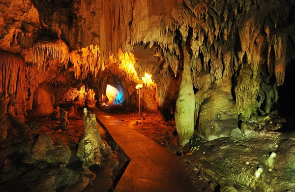
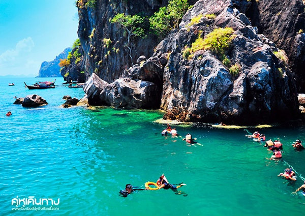

สถานที่ท่องเที่ยวเชิงธรรมชาติ
ถ้ำเลเขากอบ : ต้องใช้เรือล่องตามลำน้ำเข้าไปข้างใน เพื่อไปชมหินงอกหินย้อยอันงดงาม มีโถงถ้ำมากมายหลายถ้ำ แต่ปัจจุบันนี้ เปิดให้บริการท่องเที่ยวเพียง 5 ถ้ำเท่านั้น ได้แก่ ถ้ำคนธรรพ์ ถ้ำท้องพระโรง ถ้ำรากไทร ถ้ำเจ้าสาว ถ้ำลอด หรือ ถ้ำมังกร โดยเรือจะเริ่มล่องไปตามน้ำและจอดหน้าถ้ำแต่ละถ้ำ หลังจากนั้นก็เดินเข้าไปชมแล้วก็ล่องเรือไปยังถ้ำต่อๆไป ใช้เวลาประมาณ 1 ชั่วโมงในการเที่ยวชมถ้ำ

เกาะเชือกและเกาะม้า : ซึ่งอยู่ห่างจากท่าเรือปากเมงประมาณ 12 กิโลเมตร ทั้ง เกาะเชือก และ เกาะม้า นี้ มีลักษณะเป็นภูผากลางทะเล ไม่มีชายหาดให้ขึ้นไปบนเกาะได้ แต่ความพิเศษของเกาะแห่งนี้ก็คือ เป็นแหล่งปะการังน้ำตื้นที่สมบูรณ์สวยงาม จุดนี้เป็นจุดที่มีกระแสน้ำเชี่ยว การดำน้ำดูปะการังจึงต้องมีเชือกให้คอยเกาะไว้เพื่อป้องกันกระแสน้ำพัดออกไปไกลจากตัวเรือจนอาจเป็นอันตรายได้ จึงเป็นที่มาของคำว่า เกาะเชือกนั่นเอง